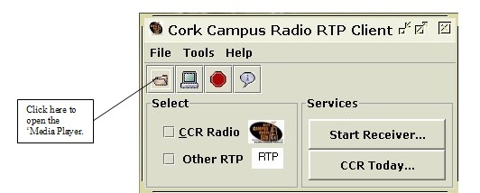

Contents
Introduction
Features
Listen to CCR!
Listen to User Specified RTP
View CCR Schedule
RTP Session History
CCR 'Media Player'
Requirements
About CCR, More Info
CCR 'Media Player'

The 'Media Player' utility enables the user of the 'Cork Campus Radio RTP Client' to open and listen to any 'WAV' or 'MP3' file. It can be accessed through button on the tool bar or through the 'File' menu. Once the 'Media Player' has been initialised the user is presented with a 'file chooser' window allowing them to browse for the file to play. Once a file is selected a media control panel is presented to the user allowing them to play/pause, mute the audio file.

Figure 4.1: Access to Media Player.